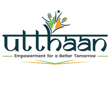
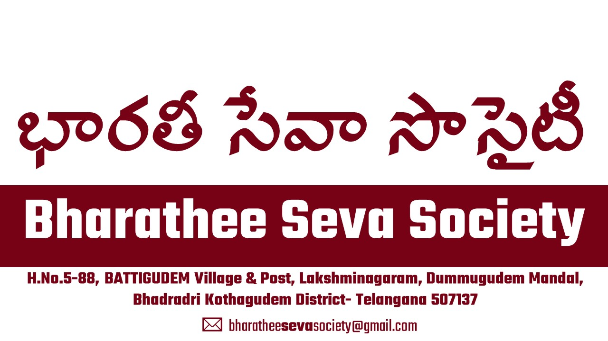
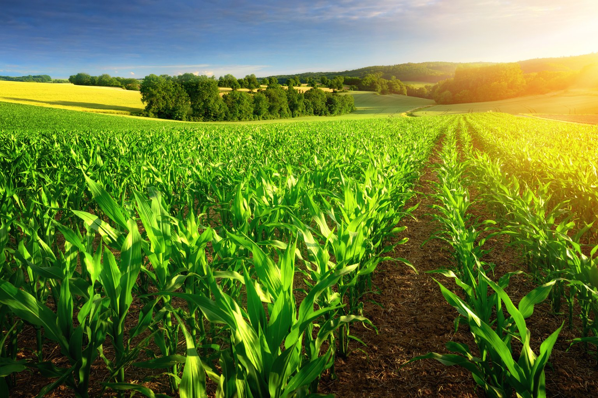

Free-Range, Organic Poultry
फ्री-रेंज, जैविक पोल्ट्री
ఫ్రీ-రేంజ్, సేంద్రీయ కోళ్ల ఫారం
Our poultry farm practices free-range, organic farming methods, ensuring high-quality, ethical produce.

BHARATHEE SEVA SOCIETY is committed to sustainable farming practices and rural development.
Join Our MissionWe are working towards improving the lives of rural communities through organic farming and sustainable practices.
Founded with the vision of promoting organic farming and rural development, BHARATHEE SEVA SOCIETY believes in empowering communities through sustainable practices.
We use natural farming methods to ensure healthier produce and a better environment.
Our poultry farm practices free-range, organic farming methods, ensuring high-quality, ethical produce.
Support us in our efforts to empower rural communities. You can help by donating, volunteering, or partnering with us to make a positive impact.
Donate दान करें దానం చేయండి Volunteer स्वयंसेवक बनें స్వచ్ఛందంగా చేయండి